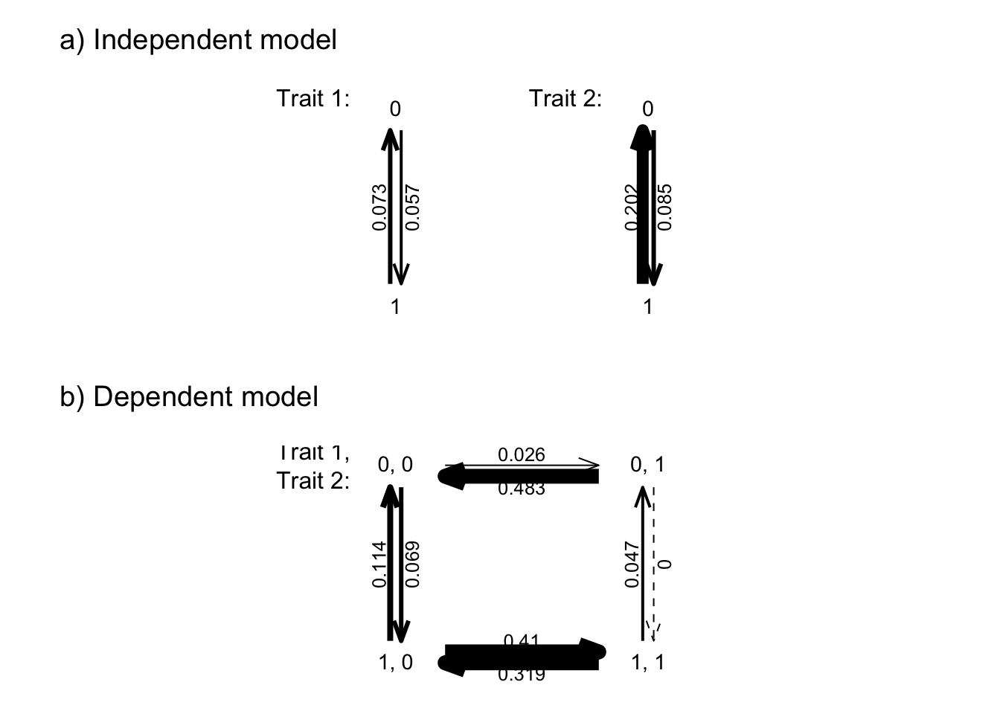
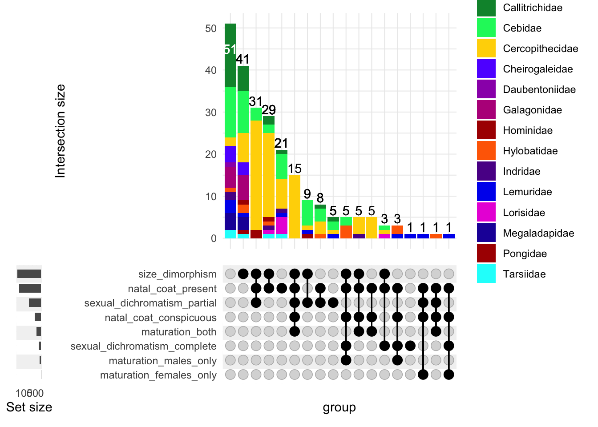
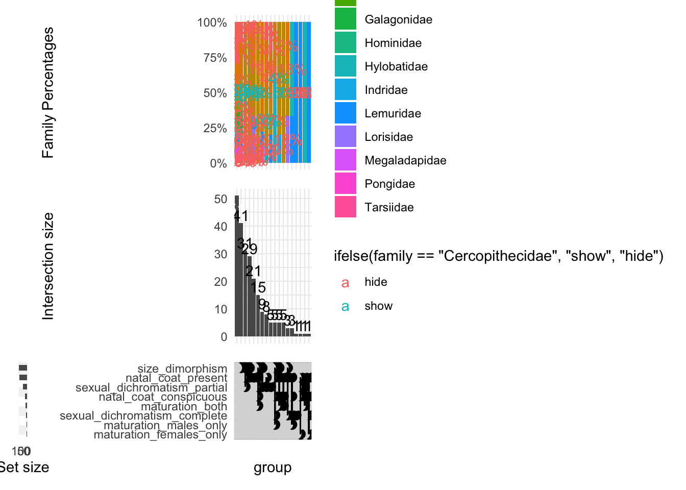

Analysis for the AABA poster
Sarah E Taylor
2024-03-13
Last updated: 2024-03-17
Checks: 7 0
Knit directory: LocksofLineage/
This reproducible R Markdown analysis was created with workflowr (version 1.7.1). The Checks tab describes the reproducibility checks that were applied when the results were created. The Past versions tab lists the development history.
Great! Since the R Markdown file has been committed to the Git repository, you know the exact version of the code that produced these results.
Great job! The global environment was empty. Objects defined in the global environment can affect the analysis in your R Markdown file in unknown ways. For reproduciblity it’s best to always run the code in an empty environment.
The command set.seed(20231117) was run prior to running
the code in the R Markdown file. Setting a seed ensures that any results
that rely on randomness, e.g. subsampling or permutations, are
reproducible.
Great job! Recording the operating system, R version, and package versions is critical for reproducibility.
Nice! There were no cached chunks for this analysis, so you can be confident that you successfully produced the results during this run.
Great job! Using relative paths to the files within your workflowr project makes it easier to run your code on other machines.
Great! You are using Git for version control. Tracking code development and connecting the code version to the results is critical for reproducibility.
The results in this page were generated with repository version 3818f0b. See the Past versions tab to see a history of the changes made to the R Markdown and HTML files.
Note that you need to be careful to ensure that all relevant files for
the analysis have been committed to Git prior to generating the results
(you can use wflow_publish or
wflow_git_commit). workflowr only checks the R Markdown
file, but you know if there are other scripts or data files that it
depends on. Below is the status of the Git repository when the results
were generated:
Ignored files:
Ignored: .DS_Store
Ignored: .Rhistory
Ignored: .Rproj.user/
Ignored: data/.DS_Store
Ignored: output/.DS_Store
Untracked files:
Untracked: output/Euler_bigger_values.pdf
Untracked: output/Euler_bigger_values.png
Untracked: output/Euler_no_text.png
Untracked: output/Resized_upset_plot.pdf
Untracked: output/Resized_upset_plot.png
Untracked: output/Upset_recolored_for_illustrator.pdf
Untracked: output/Upset_recolored_for_illustrator.png
Untracked: output/euler_pdf_for_illustrator.pdf
Untracked: output/euler_pdf_for_illustrator.png
Untracked: output/euler_venn_ncsd.pdf
Untracked: output/euler_venn_ncsd.png
Untracked: output/natal_coat_sex_dichrom_pagel.png
Untracked: output/pagel_for_illustrator.pdf
Untracked: output/pagel_for_illustrator.psd
Untracked: output/pdf_pagel_ncsd_plot.pdf
Untracked: output/recolored_upset_plot.png
Untracked: output/size_dimorph_color_traits.png
Untracked: output/upset_family_percentages.png
Untracked: output/upset_tina_colors.pdf
Untracked: output/upset_tina_colors.png
Untracked: output/venn_size_natal_dichrom.png
Unstaged changes:
Deleted: VennDiagram.2024-02-28_11-47-25.log
Deleted: VennDiagram.2024-02-29_15-50-13.log
Deleted: VennDiagram.2024-02-29_15-55-51.log
Deleted: analysis/MCMCglmm_on_integrated_traits.Rmd
Deleted: analysis/updated_names_analysis.Rmd
Modified: data/Raw_Data/data_to_use.csv
Note that any generated files, e.g. HTML, png, CSS, etc., are not included in this status report because it is ok for generated content to have uncommitted changes.
These are the previous versions of the repository in which changes were
made to the R Markdown (analysis/AABA_analysis.Rmd) and
HTML (docs/AABA_analysis.html) files. If you’ve configured
a remote Git repository (see ?wflow_git_remote), click on
the hyperlinks in the table below to view the files as they were in that
past version.
| File | Version | Author | Date | Message |
|---|---|---|---|---|
| Rmd | 3818f0b | Sarah E Taylor | 2024-03-17 | Analysis for the poster. |
Set up
library(tidyverse)── Attaching core tidyverse packages ──────────────────────── tidyverse 2.0.0 ──
✔ dplyr 1.1.0 ✔ readr 2.1.4
✔ forcats 1.0.0 ✔ stringr 1.5.0
✔ ggplot2 3.4.4 ✔ tibble 3.1.8
✔ lubridate 1.9.2 ✔ tidyr 1.3.0
✔ purrr 1.0.1
── Conflicts ────────────────────────────────────────── tidyverse_conflicts() ──
✖ dplyr::filter() masks stats::filter()
✖ dplyr::lag() masks stats::lag()
ℹ Use the conflicted package (<http://conflicted.r-lib.org/>) to force all conflicts to become errorslibrary(janitor)
Attaching package: 'janitor'
The following objects are masked from 'package:stats':
chisq.test, fisher.testlibrary(ape)
Attaching package: 'ape'
The following object is masked from 'package:dplyr':
wherelibrary(phytools)Loading required package: maps
Attaching package: 'maps'
The following object is masked from 'package:purrr':
map#Library for upset plot
library(ComplexUpset)
library(eulerr)#Map the families onto the superfamilies
superfamily_mapping <- data.frame(
family = c("Lorisidae", "Galagonidae", "Daubentoniidae","Indridae", "Lemuridae", "Cheirogaleidae", "Megaladapidae", "Tarsiidae", "Cebidae", "Callitrichidae", "Hylobatidae", "Pongidae", "Hominidae", "Cercopithecidae"),
superfamily = c("Lorisiformes", "Lorisiformes", "Lemuriformes", "Lemuriformes", "Lemuriformes", "Lemuriformes", "Lemuriformes","Tarsiiformes", "Platyrrhini", "Platyrrhini", "Hominoidea", "Hominoidea", "Hominoidea", "Cercopithecoidea"))
df_trait_values <- read_csv("data/Raw_Data/data_to_use.csv") %>%
clean_names() %>%
mutate(
natal_coat = if_else(natal_coat == "Yes", 1, 0),
sexual_dichromatism = if_else(sexual_dichromatism == "Yes", 1, 0)
) %>%
mutate(
natal_coat_type_simple = case_when(
natal_coat_type %in% c("Con to dad", "con to both", "con to mom") ~ "conspicuous",
natal_coat_type == "incon" ~ "inconspicuous",
TRUE ~ "none" # This catches all other cases
)
) %>%
mutate(
natal_coat_conspicuous = ifelse(natal_coat_type_simple == "conspicuous", 1, 0),
natal_coat_inconspicuous = ifelse(natal_coat_type_simple == "inconspicuous", 1, 0),
natal_coat_present = ifelse(natal_coat_type_simple %in% c("conspicuous", "inconspicuous"), 1, 0)
) %>%
mutate(
maturation_color_change = case_when(
natal_coat_type == "Con to dad" ~ "Males only",
natal_coat_type == "con to mom" ~ "Females only",
natal_coat_type == "con to both" ~ "Both",
TRUE ~ "None"
),
maturation_males_only = as.integer(maturation_color_change == "Males only"),
maturation_females_only = as.integer(maturation_color_change == "Females only"),
maturation_both = as.integer(maturation_color_change == "Both"),
maturation_none = as.integer(maturation_color_change == "None")
) %>%
mutate(sexual_dichromatism_complete = ifelse(sexual_dichromatism_type == "Complete", 1, 0),
sexual_dichromatism_partial = ifelse(sexual_dichromatism_type == "Partial", 1, 0),
sexual_dichromatism_present = ifelse(sexual_dichromatism_type %in% c("Complete", "Partial"), 1, 0)
) %>%
mutate(
all_color_traits = ifelse(natal_coat | sexual_dichromatism |
maturation_both | maturation_females_only | maturation_males_only, 1, 0)
)%>%
select(
family, genus, species,
natal_coat, natal_coat_type, natal_coat_type_simple, natal_coat_conspicuous, natal_coat_inconspicuous, natal_coat_present,
sexual_dichromatism, sexual_dichromatism_type, sexual_dichromatism_complete, sexual_dichromatism_partial, sexual_dichromatism_present,
size_dimorphism, maturation_color_change,
maturation_males_only, maturation_females_only,
maturation_both, maturation_none,
all_color_traits
)Rows: 238 Columns: 17
── Column specification ────────────────────────────────────────────────────────
Delimiter: ","
chr (16): family, Genus, species, subspecies, Sexual_dimorphism, Sexual_Dimo...
dbl (1): Size_Dimorphism
ℹ Use `spec()` to retrieve the full column specification for this data.
ℹ Specify the column types or set `show_col_types = FALSE` to quiet this message.#read in mammal tree
mammaltree <- read.tree("data/Raw_Data/MamPhy_BDvr_Completed_v2_tree0000.tre")
summary(mammaltree)
Phylogenetic tree: mammaltree
Number of tips: 5987
Number of nodes: 5986
Branch lengths:
mean: 2.680715
variance: 24.17565
distribution summary:
Min. 1st Qu. Median 3rd Qu. Max.
0.0000000 0.5284341 1.3073255 2.9454665 106.6007500
No root edge.
First ten tip labels: X_Shuotherium
X_Pseudotribos
X_Asfaltomylos
X_Obdurodon
Zaglossus_bartoni
Zaglossus_bruijnii
Zaglossus_attenboroughi
Tachyglossus_aculeatus
Ornithorhynchus_anatinus
X_Teinolophos
No node labels.# Assuming mammaltree has already been loaded with read.tree() as in the provided code
Binary_traits_combined <- df_trait_values %>%
unite("species", genus, species, sep = "_") %>%
mutate(species = str_to_title(species)) %>%
mutate(family = str_to_title(family)) %>%
filter(species %in% mammaltree$tip.label)
pruned.tree <- drop.tip(mammaltree, setdiff(mammaltree$tip.label, Binary_traits_combined$species))
data_pruned_ordered <- Binary_traits_combined %>%
arrange(match(species, pruned.tree$tip.label)) %>%
left_join(superfamily_mapping, by = "family") %>%
column_to_rownames("species")Run the phytools fitPagel model
natal_coats <- setNames(data_pruned_ordered$natal_coat,rownames(data_pruned_ordered))
sexual_dichromatism <- setNames(data_pruned_ordered$sexual_dichromatism,rownames(data_pruned_ordered))
size_dimorphism <- setNames(data_pruned_ordered$size_dimorphism,rownames(data_pruned_ordered))
all_color_traits <- setNames(data_pruned_ordered$all_color_traits,rownames(data_pruned_ordered))# Correlations between natal coats and sexual dichromatism
natal_coats_and_sexual_dichrom_pagel <- fitPagel(pruned.tree, natal_coats, sexual_dichromatism)
anova(natal_coats_and_sexual_dichrom_pagel) log(L) d.f. AIC weight
independent -284.6806 4 577.3613 2.328933e-08
natal_coats_and_sexual_dichrom_pagel -263.1054 8 542.2107 1.000000e+00# Correlations between size dimorphism and the color traits (natal coats and sexual dichromatism)
# size_and_color_pagel <- fitPagel(pruned.tree, size_dimorphism, all_color_traits)# Plot the natal coat and sexual dichromatism model
plot(natal_coats_and_sexual_dichrom_pagel, lwd.by.rate=TRUE)
#plot(size_and_color_pagel, lwd.by.rate=TRUE)Other plots for the poster
#scale_fill_manual(values=c("Lorisidae" = "darkseagreen", "Galagonidae"= "mediumseagreen", "Daubentoniidae" = "chocolate4", "Indridae" = "chocolate2", "Lemuridae" = "salmon", "Cheirogaleidae" = "coral3", "Megaladapidae" = "sienna3", "Tarsiidae" = "gold", "Cebidae" = "cyan", "Callitrichidae" = "turquoise", "Cercopithecidae" = "burlywood2", "Hylobatidae" = "maroon", "Pongidae" = "violetred2", "Hominidae" = "deeppink1"),)
# Color palatte for streps
tailwind_colors <- c(
"Blue" = "#000cee",
"Zaffre" = "#2107a7",
"ElectricIndigo" = "#6200ff",
"Indigo" = "#5c0096",
"DarkViolet" = "#9c00b8",
"HotMagenta" = "#ea2cda",
"Fandango" = "#b8008a",
"Cyan (RGB)" = "#00fffb",
"Spring Green" = "#00f56a",
"Forest Green" = "#009138",
"Gold" = "#ffd500",
"Pumpkin" = "#ff6a00",
"Turkey Red" = "#ac0000"
)
# Define the traits
set_attributes <- c(
'natal_coat_present',
'natal_coat_conspicuous',
'size_dimorphism',
'sexual_dichromatism_complete',
'sexual_dichromatism_partial',
'maturation_males_only',
'maturation_females_only',
'maturation_both')
# Create the plot
upset(
data_pruned_ordered,
set_attributes,
base_annotations = list(
'Intersection size' = intersection_size(
counts = TRUE,
mapping = aes(fill = family) # Ensure 'family' is the correct column
) + scale_fill_manual(values = c(
"Lorisidae" = "#ea2cda",
"Galagonidae" = "#b8008a",
"Daubentoniidae" = "#9c00b8",
"Indridae" = "#5c0096",
"Lemuridae" = "#000CEE",
"Cheirogaleidae" = "#6200ff",
"Megaladapidae" = "#2107a7",
"Tarsiidae" = "#00fffb",
"Cebidae" = "#00f56a",
"Callitrichidae" = "#009138",
"Cercopithecidae" = "#ffd500",
"Hylobatidae" = "#ff6a00",
"Pongidae" = "#ac0000",
"Hominidae" = "#ac0000"
))
),
width_ratio = 0.1
)Warning in upset_data(data, intersect, mode = mode, encode_sets = encode_sets,
: Converting non-logical columns to binary: natal_coat_present,
natal_coat_conspicuous, size_dimorphism, sexual_dichromatism_complete,
sexual_dichromatism_partial, maturation_males_only, maturation_females_only,
maturation_bothWarning in upset_data(data, intersect, mode = mode, encode_sets = encode_sets,
: Detected missing values in the columns indicating sets, coercing to FALSE
upset(
data_pruned_ordered, set_attributes, width_ratio=0.1,
annotations =list(
'Family Percentages'=list(
aes=aes(x=intersection, fill=family),
geom=list(
geom_bar(stat='count', position='fill', na.rm=TRUE),
geom_text(
aes(
label=!!aes_percentage(relative_to='group'),
group=family,
color=ifelse(family == 'Cercopithecidae', 'show', 'hide')
),
stat='count',
position=position_fill(vjust = .5)
),
scale_y_continuous(labels=scales::percent_format())
)
)
)
)Warning in upset_data(data, intersect, mode = mode, encode_sets = encode_sets,
: Converting non-logical columns to binary: natal_coat_present,
natal_coat_conspicuous, size_dimorphism, sexual_dichromatism_complete,
sexual_dichromatism_partial, maturation_males_only, maturation_females_only,
maturation_bothWarning in upset_data(data, intersect, mode = mode, encode_sets = encode_sets,
: Detected missing values in the columns indicating sets, coercing to FALSEWarning: The dot-dot notation (`..prop..`) was deprecated in ggplot2 3.4.0.
ℹ Please use `after_stat(prop)` instead.
ℹ The deprecated feature was likely used in the ComplexUpset package.
Please report the issue at
<https://github.com/krassowski/complex-upset/issues>.
This warning is displayed once every 8 hours.
Call `lifecycle::last_lifecycle_warnings()` to see where this warning was
generated.
VennDiag <- euler(c("A" = 62 + 67, "B" = 13 + 67, "A&B" = 67))
plot(VennDiag, quantities = TRUE, font = 1, cex = 1, alpha = 0.5, fill=c("#F38C79","#D8EDDB"), labels = c("Natal Coats", "Sexual Dichromatism"))
sessionInfo()R version 4.2.1 (2022-06-23)
Platform: x86_64-apple-darwin17.0 (64-bit)
Running under: macOS Big Sur ... 10.16
Matrix products: default
BLAS: /Library/Frameworks/R.framework/Versions/4.2/Resources/lib/libRblas.0.dylib
LAPACK: /Library/Frameworks/R.framework/Versions/4.2/Resources/lib/libRlapack.dylib
locale:
[1] en_US.UTF-8/en_US.UTF-8/en_US.UTF-8/C/en_US.UTF-8/en_US.UTF-8
attached base packages:
[1] stats graphics grDevices utils datasets methods base
other attached packages:
[1] eulerr_7.0.0 ComplexUpset_1.3.3 phytools_2.0-3 maps_3.4.1
[5] ape_5.7 janitor_2.2.0 lubridate_1.9.2 forcats_1.0.0
[9] stringr_1.5.0 dplyr_1.1.0 purrr_1.0.1 readr_2.1.4
[13] tidyr_1.3.0 tibble_3.1.8 ggplot2_3.4.4 tidyverse_2.0.0
[17] workflowr_1.7.1
loaded via a namespace (and not attached):
[1] nlme_3.1-160 fs_1.6.1 bit64_4.0.5
[4] doParallel_1.0.17 httr_1.4.4 rprojroot_2.0.4
[7] numDeriv_2016.8-1.1 tools_4.2.1 bslib_0.4.2
[10] utf8_1.2.2 R6_2.5.1 colorspace_2.0-3
[13] withr_2.5.0 tidyselect_1.2.0 mnormt_2.1.1
[16] processx_3.8.3 phangorn_2.11.1 bit_4.0.5
[19] compiler_4.2.1 git2r_0.32.0 cli_3.6.2
[22] expm_0.999-7 labeling_0.4.2 sass_0.4.5
[25] scales_1.2.1 quadprog_1.5-8 callr_3.7.3
[28] digest_0.6.30 rmarkdown_2.20 pkgconfig_2.0.3
[31] htmltools_0.5.7 fastmap_1.1.0 highr_0.10
[34] rlang_1.1.2 rstudioapi_0.14 optimParallel_1.0-2
[37] jquerylib_0.1.4 generics_0.1.3 farver_2.1.1
[40] combinat_0.0-8 jsonlite_1.8.8 vroom_1.6.1
[43] magrittr_2.0.3 patchwork_1.1.2 Matrix_1.5-3
[46] Rcpp_1.0.11 munsell_0.5.0 fansi_1.0.3
[49] lifecycle_1.0.3 scatterplot3d_0.3-44 stringi_1.7.8
[52] whisker_0.4.1 yaml_2.3.7 snakecase_0.11.1
[55] clusterGeneration_1.3.8 MASS_7.3-58.1 grid_4.2.1
[58] parallel_4.2.1 promises_1.2.1 crayon_1.5.2
[61] lattice_0.20-45 hms_1.1.2 polylabelr_0.2.0
[64] knitr_1.42 ps_1.7.2 pillar_1.8.1
[67] igraph_1.5.1 codetools_0.2-18 fastmatch_1.1-3
[70] glue_1.6.2 evaluate_0.23 getPass_0.2-2
[73] vctrs_0.5.2 tzdb_0.3.0 httpuv_1.6.11
[76] foreach_1.5.2 polyclip_1.10-6 gtable_0.3.1
[79] cachem_1.0.6 xfun_0.41 coda_0.19-4
[82] later_1.3.1 iterators_1.0.14 timechange_0.2.0
[85] ellipsis_0.3.2